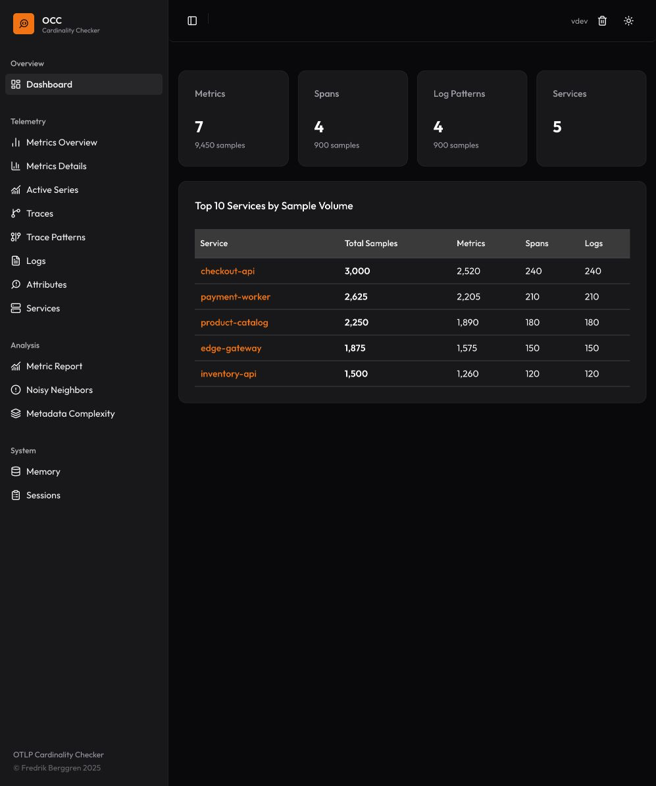
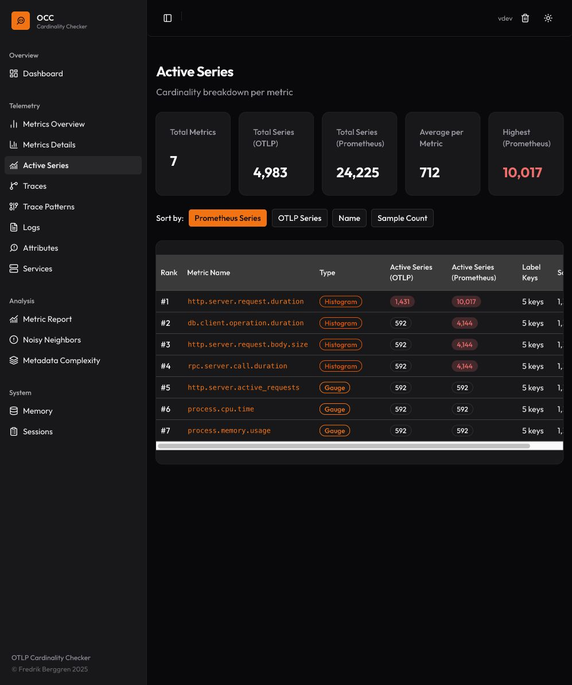

One catalog.
Every signal.
Explore attribute keys across metrics, traces and logs. Filter by signal and scope, inspect bounded samples, and opt into Deep Watch for selected keys.
OBSERVE THE OBSERVABILITY.
Know what your
applications are
really sending.
Find high-cardinality attributes. Understand your metric series. Turn logs into patterns. All in one standalone tool.
Download OCC Take a closer look
Start with the big picture.
Then follow the attributes, series
and patterns that matter.
Explore estimated OTLP series, attribute cardinality and metric structure. See which dimensions deserve a closer look before they reach your backend.

Explore attribute keys across metrics, traces and logs. Filter by signal and scope, inspect bounded samples, and opt into Deep Watch for selected keys.
Navigate service-level telemetry and accumulated sample volume. Use Noisy Neighbors to find contributors worth investigating.
Keep collected state in memory while you investigate. Save a file-based snapshot when you want to return to an observation.
Export collected metadata and sample values from Sessions. Run OTel Weaver live-check to assess them against OpenTelemetry semantic conventions.
Weaver live-check ↗OCC was created to inspect the shape of telemetry.
Explore telemetry structure across metrics, traces and logs. Follow cardinality estimates, attribute samples and recurring patterns—from a service overview down to the fields worth investigating.
Send OTLP directly from your SDK or add OCC as another exporter destination in your Collector. Receivers, signal analysis and in-memory storage run together in one process.
Built for understanding telemetry structure. Counts and cardinality estimates cover collected observations; they are not measurements of backend capacity or cost.
A standalone binary with its web UI built in.
No separate database or frontend server.
brew install fiddeb/tap/occ
occHomebrew on macOS and Linux. Or choose a binary for your platform below.
Send OTLP directly from your application's SDK, or configure your OpenTelemetry Collector to export to OCC.
export OTEL_EXPORTER_OTLP_ENDPOINT=\
http://localhost:4318
export OTEL_EXPORTER_OTLP_PROTOCOL=\
http/protobufSDK example above (HTTP/protobuf). For Collector routing, use the configuration below.
Open the built-in UI in your browser. Start with the dashboard, then explore metrics, attributes and patterns.
localhost:8090The UI runs on the machine hosting OCC. Bind network interfaces and route telemetry according to your environment.
Add OCC to your existing exporters and the signal pipelines you want to inspect. Keep your existing receivers, processors and backend exporters.
exporters:
otlphttp/occ:
endpoint: http://localhost:4318
service:
pipelines:
metrics:
receivers: [otlp]
exporters: [otlphttp/occ]
traces:
receivers: [otlp]
exporters: [otlphttp/occ]
logs:
receivers: [otlp]
exporters: [otlphttp/occ]Example fragment, not a complete Collector configuration. In containers, use the OCC service address instead of localhost.
Apple Silicon or Intel
Apple Silicon .zip Intel .zipx86-64 or ARM64
x86-64 .tar.gz ARM64 .tar.gzx86-64 executable
Download .exe All releasesDownload links point to the latest public release verified when this site was prepared.
OCC is a diagnostic tool for exploring telemetry structure. Keep your existing backend for long-term storage, querying and alerting. Send a copy of your telemetry to OCC when you want to investigate.
Collected state stays in memory until you save a session snapshot to a file. OCC retains bounded attribute value samples and example log bodies. Deep Watch records distinct values for selected keys. Only send data that your retention controls allow.
Cardinality estimates use HyperLogLog. They describe retained observations. Metric Report findings are investigation prompts, not proof of faulty instrumentation, guaranteed savings or backend limits. Prometheus classic histogram projections are conditional what-if estimates.
Yes. Point a compatible OpenTelemetry SDK directly at OCC's OTLP HTTP endpoint on port 4318 or gRPC endpoint on port 4317. A Collector is optional and useful for routing or sending a copy alongside your existing backend export.
Get binaries and release notes from the public OCC releases. Report problems in the public issue tracker. Versioned builds can check public releases; OCC does not install updates automatically.